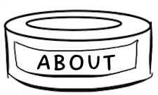

Night Soup is a music publishing and recording outfit based in Los Angeles. Dreamed up as a way to promote and place tracks that otherwise might only be heard and cherished by a handful of diehard fans, the mission is simple — to try to get the word out about songs we believe in. The catalog, which at this point is mostly comprised of songs written or co-written by Kirsten Opstad, is over a decade in the making and continues to grow with each year. Sometimes a little slower. Take a look around, listen to a few tracks and make yourself at home. If you can imagine one of these tunes in your project or in your voice — get in touch.